- 00 导读 解读OWASP Top10 2021.md.html
- 00 开篇词 从黑客的视角找漏洞，从安全的角度优雅coding.md.html
- 01 失效的访问控制：攻击者如何获取其他用户信息？.md.html
- 02 路径穿越：你的Web应用系统成了攻击者的资源管理器？.md.html
- 03 敏感数据泄露：攻击者如何获取用户账户？.md.html
- 04 权限不合理：攻击者进来就是root权限？.md.html
- 05 CSRF：为什么用户的操作他自己不承认？.md.html
- 06 加密失败：使用了加密算法也会被破解吗？.md.html
- 07 弱编码：程序之间的沟通语言安全吗？.md.html
- 08 数字证书：攻击者可以伪造证书吗？.md.html
- 09 密码算法问题：数学知识如何提高代码可靠性？.md.html
- 10 弱随机数生成器：攻击者如何预测随机数？.md.html
- 11 忘记加“盐”：加密结果强度不够吗？.md.html
- 12 注入（上）：SQL注入起手式.md.html
- 13 注入（下）：SQL注入技战法及相关安全实践.md.html
- 14 自动化注入神器（一）：sqlmap的设计思路解析.md.html
- 15 自动化注入神器（二）：sqlmap的设计架构解析.md.html
- 16 自动化注入神器（三）：sqlmap的核心实现拆解.md.html
- 17 自动化注入神器（四）：sqlmap的核心功能解析.md.html
- 19 失效的输入检测（上）：攻击者有哪些绕过方案？.md.html
- 20 失效的输入检测（下）：攻击者有哪些绕过方案？.md.html
- 21 XSS（上）：前端攻防的主战场.md.html
- 22 XSS（中）：跨站脚本攻击的危害性.md.html
- 23 XSS（下）：检测与防御方案解析.md.html
- 24 资源注入：攻击方式为什么会升级？.md.html
- 25 业务逻辑漏洞：好的开始是成功的一半.md.html
- 26 包含敏感信息的报错：将安全开发标准应用到项目中.md.html
- 27 用户账户安全：账户安全体系设计方案与实践.md.html
- 28 安全配置错误：安全问题不只是代码安全.md.html
- 29 Session与Cookie：账户体系的安全设计原理.md.html
- 30 HTTP Header安全标志：协议级别的安全支持.md.html
- 31 易受攻击和过时的组件：DevSecOps与依赖项安全检查.md.html
- 32 软件和数据完整性故障：SolarWinds事件的幕后⿊⼿.md.html
- 33 SSRF：穿越边界防护的利刃.md.html
- 34 Crawler VS Fuzzing：DAST与机器学习.md.html
- 35 自动化攻防：低代码驱动的渗透工具积累.md.html
- 36 智能攻防：构建个性化攻防平台.md.html
- 大咖助场 数字证书，困境与未来.md.html
- 春节策划（一） 视频课内容精选：Web渗透测试工具教学.md.html
- 春节策划（三） 一套测试题，看看对课程内容的掌握情况.md.html
- 春节策划（二） 给你推荐4本Web安全图书.md.html
- 结束语 无畏前行.md.html
- 捐赠
27 用户账户安全：账户安全体系设计方案与实践
你好，我是王昊天。
如今，几乎每个人都有自己的微信账号，我们可以用它来和别人聊天、付款、打车甚至玩游戏。这就是账户安全体系给我们带来的便利之处，我们并不需要重新注册游戏账号，也不用记住游戏的账号、密码就能玩这款游戏，你可能会因此觉得账户安全体系是一个非常成功的设计。
事实上，用户账户体系也存在很多的安全隐患，试想如果别人登录上你的微信账号会造成什么后果呢？他可能会观看你的聊天记录、诈骗你的好友、使用你的零钱以及破坏你的游戏账号。不难看出，后果是非常严重的，也因此可以理解用户账户安全的重要性。
那么这节课，就让我们从OAuth授权漏洞、访问控制漏洞及权限提升以及身份验证漏洞这三个方面详细地学习用户账户安全问题。首先，让我们来学习用户账户安全关于授权方面的问题——OAuth开放授权。
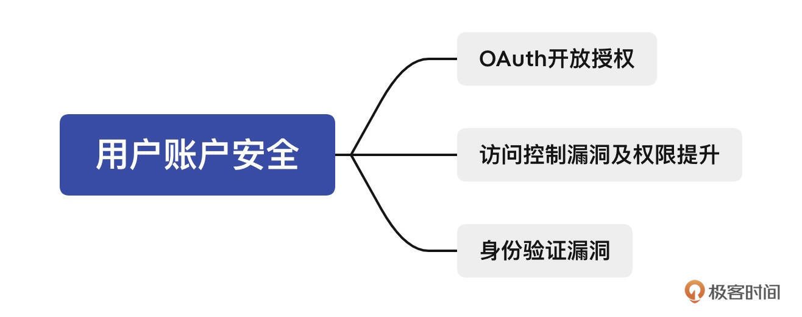
OAuth开放授权
现在很多的Web应用支持我们用其他Web应用的账号进行登录。使得我们不需要给每个Web应用都注册一个账号，这对我们来说非常方便。你可能会好奇这是如何实现的？为什么一个Web应用能用另一个Web应用的账号信息登录。事实上，它是使用OAuth框架来实现的这一方法的。
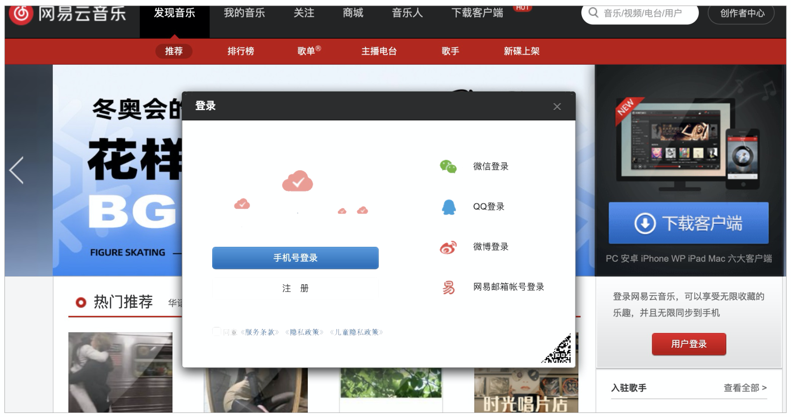
接下来，让我们具体学习什么是OAuth框架。
OAuth的功能
OAuth是一种常用的授权框架。Web应用程序可以利用它，对另一个Web应用的用户账户发起访问请求。值得一提的是，OAuth允许用户指定给另一个Web应用什么权限，而无需将自己的登录凭据全部发送给请求授权的应用程序。这里有一点需要注意，因为如今使用的授权机制几乎都是OAuth2.0，所以我们这里讲的OAuth指的是OAuth2.0。
而基本上所有的事物都会有它的双面性，虽然OAuth机制给我们带来了极大的便利，但是它也容易在执行过程中产生错误。这就导致了OAuth授权漏洞的产生，该漏洞可以帮助攻击者获取到其他用户的隐私信息，甚至绕过身份验证机制。
下面我们进一步看看这些功能的实现方式。
OAuth的实现方式
OAuth的授权过程会有三方参与，它们分别是待授权的Web应用、授权用户以及OAuth服务提供者。
实际上，OAuth有很多种不同的授权方式，我们往往会将这些不同的授权方式称为授权类型。目前，有两个授权类型得到了Web应用的广泛使用。它们分别为授权码授权和隐形授权，在授权过程中，它们都会经历下图中的六个阶段。
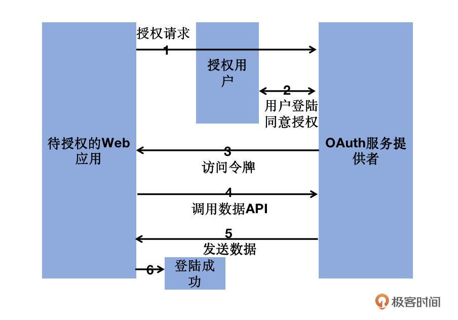
首先，待授权的Web应用会发起获取用户数据的请求，在这个请求中会包含授权类型以及它想要的访问权限。
接着，授权用户会自动登录到授权页面，同意待授权Web应用发起的获取数据请求。
然后待授权的Web应用就会收到一个唯一的访问令牌，这个令牌可以证明用户允许它访问请求的数据。
这样，客户端就可以使用这个令牌去调用相应的API接口，从保存用户数据的资源服务器获取到需要的数据，进而登陆成功。
这就是OAuth授权的理想实现方式。在部分授权类型中，OAuth授权对用户身份的验证方法存在错误，这就会导致OAuth授权漏洞，接下来让我们一起来学习这个漏洞吧。
OAuth授权漏洞
OAuth授权漏洞就是，因为OAuth授权对用户身份的验证方法存在错误，导致攻击者无需获取其他用户的授权就能实现登录上其他用户账户的问题。
这么说可能有点抽象，接下来让我们一起看一个示例：
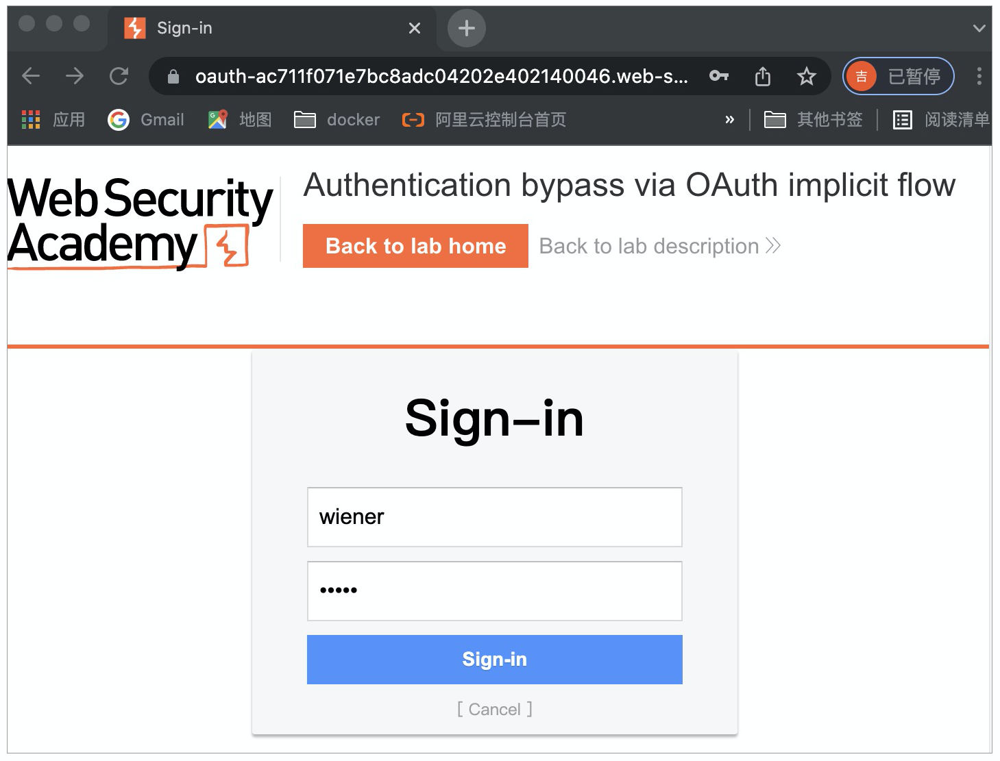
这是一个博客页面，我们可以用其他网络应用的账号，利用OAuth实现授权登录。输入正确的账号密码后，我们登录成功，通过使用BurpSuite抓包，我们可以分析出授权的请求如下：
POST /authenticate HTTP/1.1
Host: accd1fdc1ef72178c0ab064f006d0028.web-security-academy.net
Cookie: session=4XXdLxkBBr2PHqqJiuogfnxTH5o84ixX
Content-Length: 103
Sec-Ch-Ua: "Chromium";v="95", ";Not A Brand";v="99"
Accept: application/json
Content-Type: application/json
Sec-Ch-Ua-Mobile: ?0
User-Agent: Mozilla/5.0 (Windows NT 10.0; Win64; x64) AppleWebKit/537.36 (KHTML, like Gecko) Chrome/95.0.4638.54 Safari/537.36
Sec-Ch-Ua-Platform: "macOS"
Origin: https://accd1fdc1ef72178c0ab064f006d0028.web-security-academy.net
Sec-Fetch-Site: same-origin
Sec-Fetch-Mode: cors
Sec-Fetch-Dest: empty
Referer: https://accd1fdc1ef72178c0ab064f006d0028.web-security-academy.net/oauth-callback
Accept-Encoding: gzip, deflate
Accept-Language: zh-CN,zh;q=0.9
Connection: close
{"email":"[email protected]","username":"wiener","token":"G3dOwAKEb2Dg2UnFfoH2UjVpGIaq833HrGaJg2_nEWg"}
从这个请求中，我们容易分析出授权的令牌信息即为 Token 的内容。现在我们已知一个用户的邮箱为[email protected]，尝试用如下报文实现对这个邮箱对应账户的登录。
POST /authenticate HTTP/1.1
Host: accd1fdc1ef72178c0ab064f006d0028.web-security-academy.net
Cookie: session=4XXdLxkBBr2PHqqJiuogfnxTH5o84ixX
Content-Length: 103
Sec-Ch-Ua: "Chromium";v="95", ";Not A Brand";v="99"
Accept: application/json
Content-Type: application/json
Sec-Ch-Ua-Mobile: ?0
User-Agent: Mozilla/5.0 (Windows NT 10.0; Win64; x64) AppleWebKit/537.36 (KHTML, like Gecko) Chrome/95.0.4638.54 Safari/537.36
Sec-Ch-Ua-Platform: "macOS"
Origin: https://accd1fdc1ef72178c0ab064f006d0028.web-security-academy.net
Sec-Fetch-Site: same-origin
Sec-Fetch-Mode: cors
Sec-Fetch-Dest: empty
Referer: https://accd1fdc1ef72178c0ab064f006d0028.web-security-academy.net/oauth-callback
Accept-Encoding: gzip, deflate
Accept-Language: zh-CN,zh;q=0.9
Connection: close
{"email":"[email protected]","username":"wiener","token":"G3dOwAKEb2Dg2UnFfoH2UjVpGIaq833HrGaJg2_nEWg"}
我们仅仅需要将用户的邮箱改为[email protected]，就可以尝试利用OAuth授权漏洞实现对其他用户账户的登录。
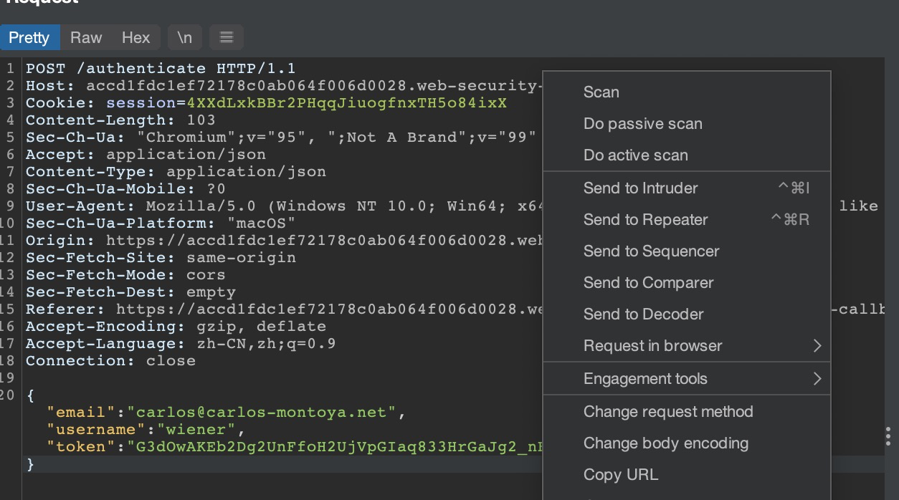
通过点击Request in browser，打开浏览器，看到我们已经成功登录上别人的账户。
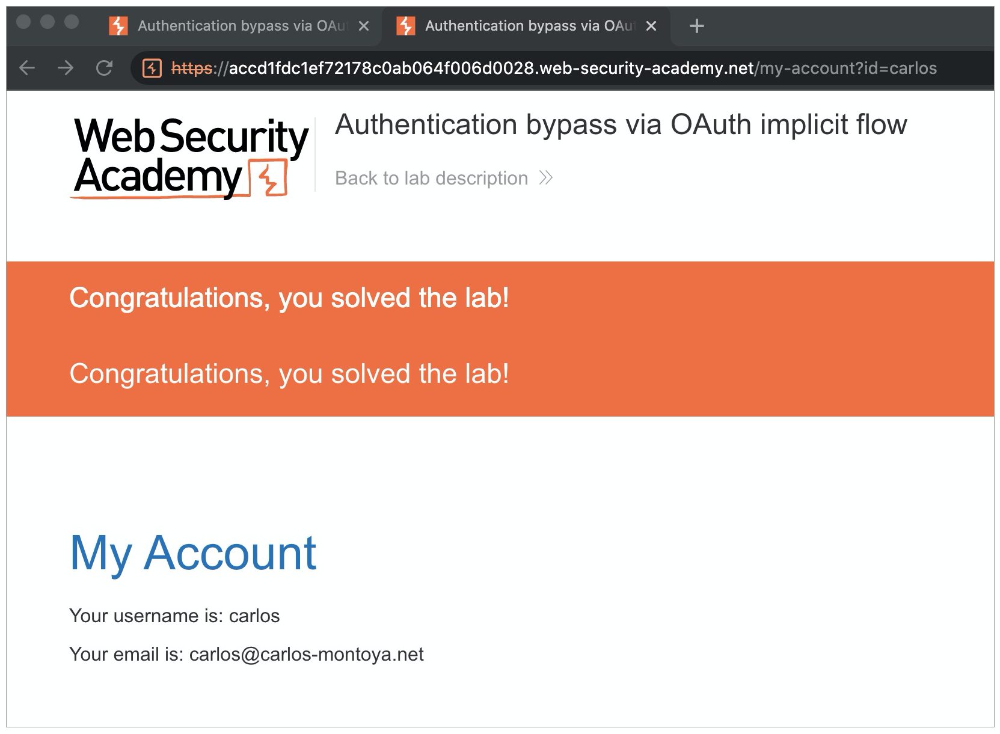
这就是一个典型的OAuth授权漏洞，追究根本原因，就是因为它在对用户授权登录时使用了错误的账户验证方法。从上述示例中，我们已知OAuth漏洞的后果是非常严重的，所以做好OAuth授权机制非常重要。
到这里，你已经学习完了账户安全体系中关于OAuth授权机制相关的问题，接下来，让我们进入到对访问控制漏洞以及权限提升的学习中去吧！
访问控制漏洞及权限提升
作为Web应用的开发者，我们需要考虑哪些资源是哪种类型的用户可以访问的。举一个简单的例子，某网站的用户分为普通用户以及管理员，普通用户只可以查看及修改自己的资料，而管理员却可以查看及修改其他人的资料，这就是使用访问控制来实现的。
在如今的网络应用中，访问控制错误非常普遍，并且它往往会造成很严重的漏洞。那么什么是访问控制漏洞呢？
当攻击者可以通过一些恶意行为，使得他可以绕过访问控制，去执行一些Web应用不允许他执行的操作，这就是访问控制漏洞。例如，作为普通用户的攻击者无法查看和修改其他资料，但是攻击者可以通过一些手段，实现管理员才具有的权限操作，这就是一种权限提升的行为。
接下来，让我们看一个具体的示例：
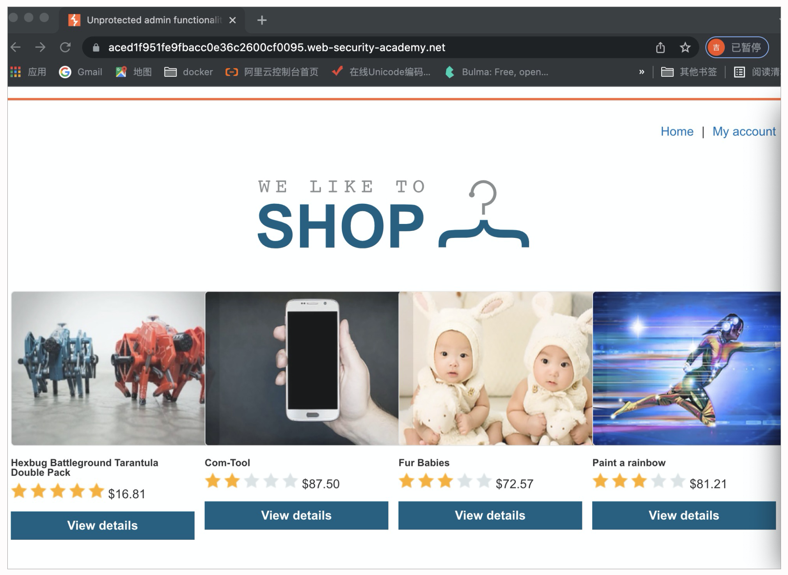
这是一个购物网站，它的用户分为两类，一类为普通用户，一类为管理员。我们作为普通用户身份，仅仅可以实现购物操作，不过我们可以尝试绕过访问控制，执行管理员才能执行的一些操作。
不知道你是否还记得robots.txt文件，在之前的课程中，我们知道它是用来告诉我们，哪些文件是允许访问的，哪些是不可以的。我们首先看看这个Web应用是否含有robots.txt文件。
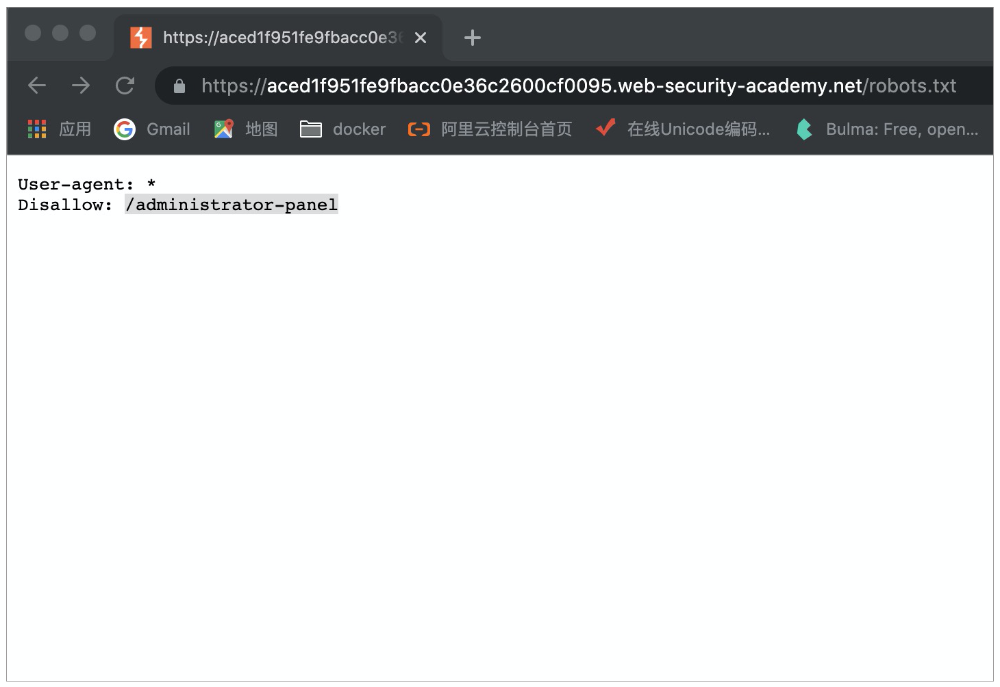
我们发现这个Web应用存在robots.txt文件，从这个文件的内容中，我们知道，这个Web应用的目录下，存在一个adminstrator-panel路径。从名称上，我们可以推断出，这个管理员控制台路径对应着管理员的控制功能。于是，我们尝试对其进行访问。
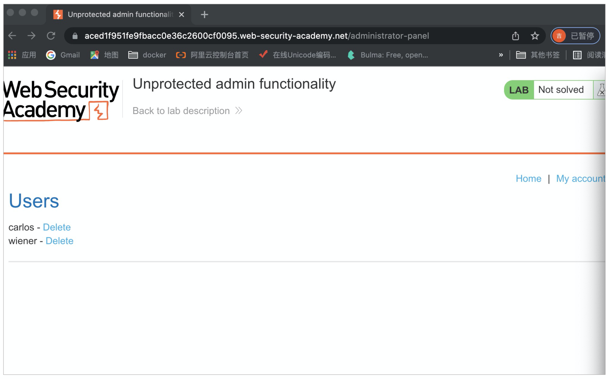
访问后发现，我们已经绕过了访问控制的限制。那在这个示例中，漏洞产生的原因就是没有对adminstractor-panel这个功能做一些保护，使得任意用户可以通过路径去对它进行访问，进而可以执行管理员才具有的功能。
到这里，你已经完成了对访问控制漏洞及权限提升的学习。接下来，让我们学习账户安全体系中关于身份验证漏洞的内容。
身份验证漏洞
不知道你有没有听过小兔子和大灰狼的故事？
故事的内容是，兔妈妈出去找食物，让小兔子一个人待在家里，这时候一个大灰狼来敲门，带上一个兔耳朵并谎称自己是兔妈妈，希望让小兔子上当，然后将门打开，这样自己就能吃到兔肉了。不过小兔子从它的声音判断出，它并不是自己的妈妈，并且没有开门，大灰狼只好灰溜溜的跑走。过了一段时间兔妈妈回来了，小兔子判断出她是兔妈妈，就给她开了门。
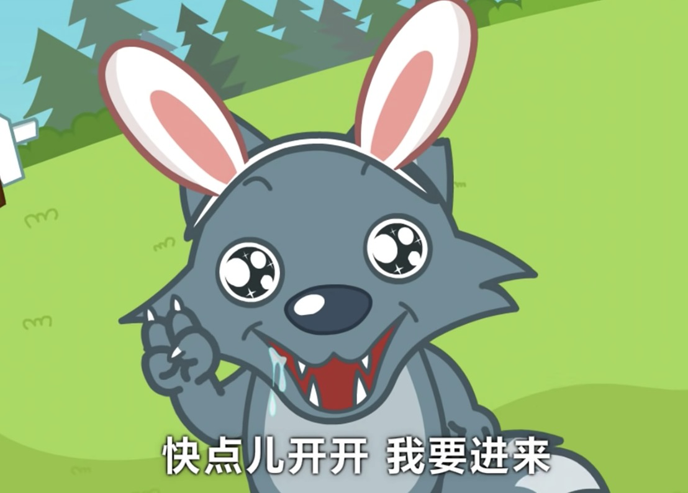
这其实就是身份验证问题，大灰狼虽然宣称自己是兔妈妈，但是小兔子根据声音判断出了它并不是。
在Web应用中也存在这样的身份验证机制，我们经常遇到的登录页面就是用来进行身份验证的，因为通常来说，只有用户本人知道自己的账户及密码信息。事实上，身份验证机制对于Web应用来说是非常重要的，如果没有它，Web应用就无法正确判断发送请求的用户身份，这会使得攻击者可以肆意伪装成其他用户发起恶意行为。
但身份验证机制并不是完美的，很多身份验证中都有漏洞的存在。接下来，让我们一起看一个示例，具体学习一下什么是身份验证漏洞。
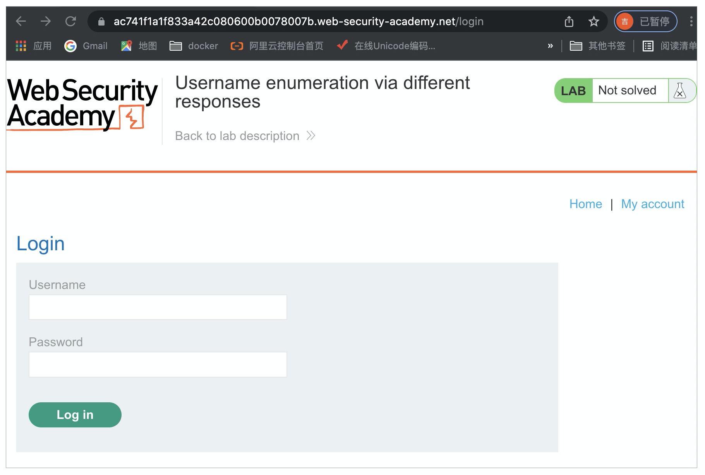
这是一个用来身份验证的登录界面，通常来说，我们需要输入账号密码才能实现登录操作。但是我们没有账号密码，却依然能登录成功。
我们首先随意输入账号密码，然后点击登录按钮，接收到Web应用的如下响应：
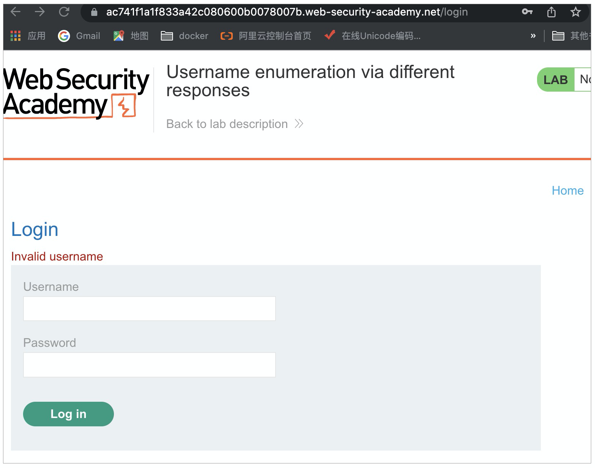
可以看到，页面给了我们提示信息Invalid username。它直接告诉我们，输入的用户名无效。所以我们可以利用一个常用的用户名字典，来对它进行暴力破解，以尝试获取到有效的用户名。
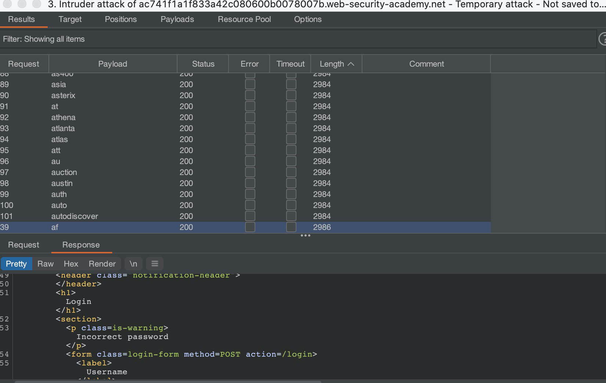
获取到暴力破解的结果后，我们只需寻找其中响应长度不同的报文进行查看，因为这代表了页面对于这个payload的响应是与众不同的，这就很可能代表这个用户名有效。由于响应的内容由无效的用户名变为了错误的密码，所以我们可以判断出af是一个有效的用户名。
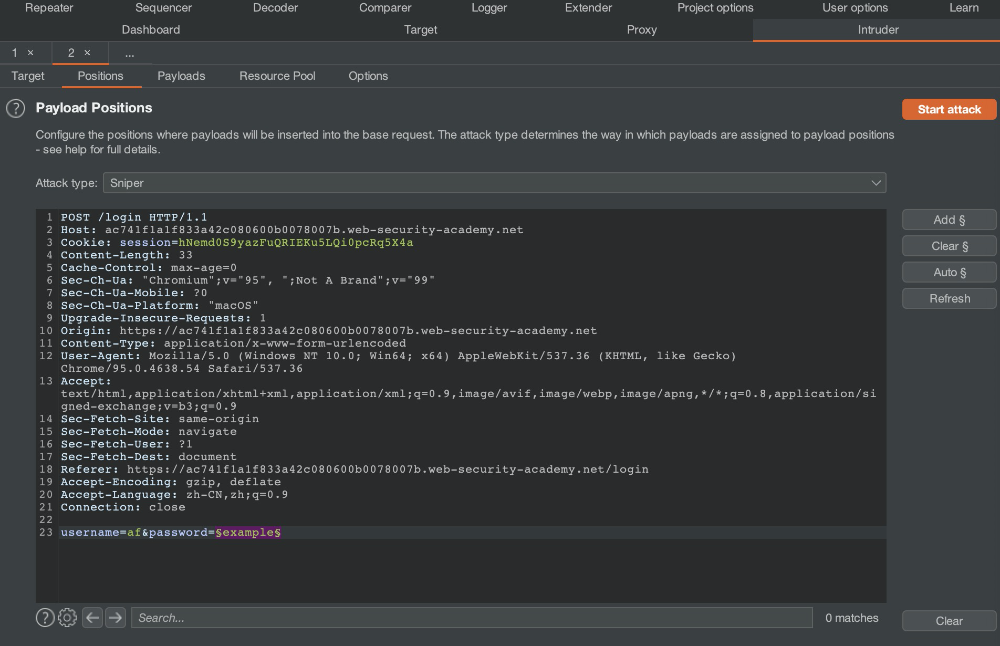
接着，我们将用户名改为af，然后再次用常见的密码字典实现对密码的暴力破解。
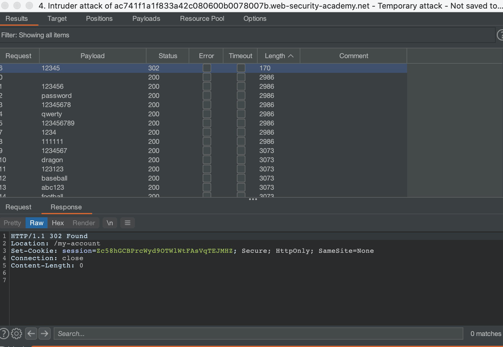
再次寻找报文长度不一致的请求，发现payload为12345，观察响应中没有报密码错误，所以我们发现用户名为af账号的密码是12345。
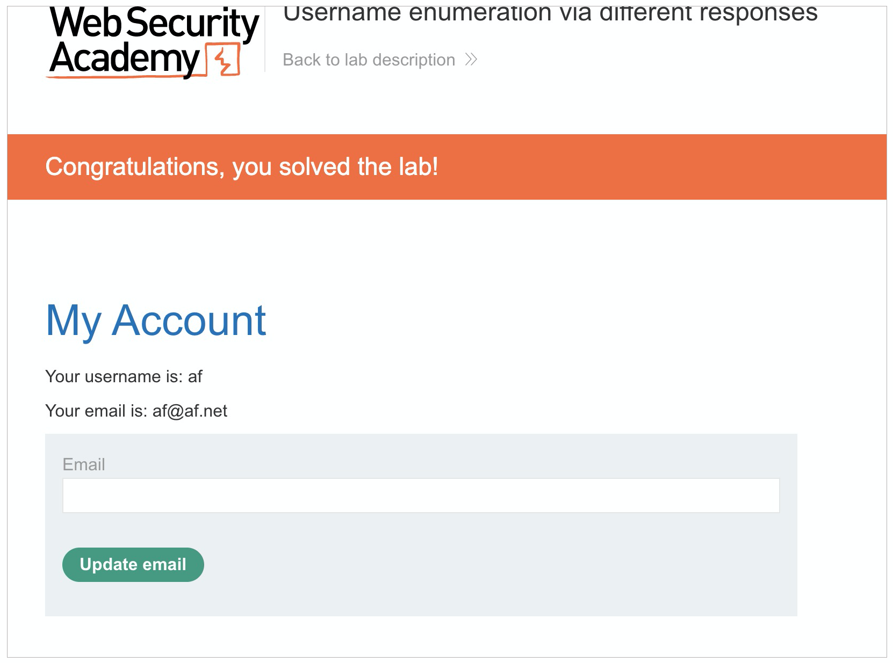
经过验证，登录成功。
这就是一个典型的身份验证漏洞，用暴力破解的方式获取到账号及密码。这样攻击者就完全可以利用它伪装成其他用户进行操作。
防御方案
在上述内容的学习中，我们知道了用户账户安全中存在的问题。那么有什么防御方案吗？一起看下。
OAuth漏洞的防御
在OAuth漏洞的讲解示例中，我们利用了之前获取到的授权令牌，实现了对另一个用户账户的授权登录。所以对于授权服务器来说，可以让授权令牌仅仅可用一次，这样就能很好地避免授权令牌的重复使用。对于待授权的客户端应用来说，可以将授权令牌绑定发起授权请求的用户，这样就使得攻击者无法使用自己的授权令牌来登录其他用户的账户。
访问控制漏洞及权限提升的防御
我们可以用两个方法实现对访问控制漏洞及权限提升的防御。第一个方法为，将所有非公开的资源默认设置为拒绝访问，这样就可以避免因为忘记配置拒绝访问而导致的访问控制漏洞。第二个方法为，对Web应用做好充分的访问测试，确保它们按照设计的方式运行，这样可以防止因为执行过程出错导致的访问控制漏洞。
身份验证漏洞的防御
为了使我们的Web应用免受身份验证漏洞造成的攻击，我们在开发时，需要遵守三个原则。第一个原则为注意验证用户的凭据，确保这个凭据只有用户拥有，且他人无法伪造，这样可以防止他人盗用身份。第二个原则为在登录时防止暴力破解，我们可以用验证码等操作来增加攻击者的攻击成本。第三个原则为多次检查身份验证逻辑，防止因为验证逻辑出现错误导致身份验证漏洞。
总结
在这节课程中，我们学习了用户账户安全方面的知识。我们首先了解到用户账户安全可以分为三个部分，即OAuth开放授权、访问控制漏洞及权限提升以及身份验证漏洞，然后对它们一一展开学习。
在对OAuth的学习中，我们知道了它是用来对第三方应用进行授权时用到的，待授权应用在请求权限时，会向OAuth服务器发送请求，然后用户会登录OAuth服务器并进行授权操作，OAuth服务器收到授权信息后会将访问令牌发送给待授权的Web应用，这样就完成了授权操作。了解完OAuth实现方法之后，我们根据一个OAuth漏洞示例，了解到OAuth漏洞产生的原因，即OAuth授权对用户身份的验证方法存在错误，导致攻击者无需获取其他用户的授权就能实现登录上其他用户账户的问题。
接下来，我们学习了访问控制漏洞及权限提升。我们首先了解了什么是访问控制，知道它是用来限制用户可访问资源的措施。当这个措施不够完善，使得用户可以绕过这个访问控制时，就代表访问控制漏洞的存在，用户可以凭此实现权限提升操作，去做一些自己原本没有权限执行的行为。
接着，我们学习了身份验证漏洞。同样，我们首先了解了什么是身份验证，身份验证顾名思义，就是用来对用户身份进行验证的措施，它可以防止攻击者伪造他人身份。当身份验证机制不够完善，导致攻击者可以通过一些手段，绕过身份验证机制，登录别人的账号，这就是身份验证漏洞。
最后，我们还学习了抵御这些用户账户安全问题的方法，这可以帮助我们构建更安全的账户安全体系。
思考题
你觉得保证用户账户安全的难点有哪些？
欢迎在评论区留下你的思考。如果觉得今天的内容对你有所帮助的话，也欢迎你把课程分享给其他同事或朋友，我们共同学习进步！
© 2019 - 2023 Liangliang Lee. Powered by gin and hexo-theme-book.